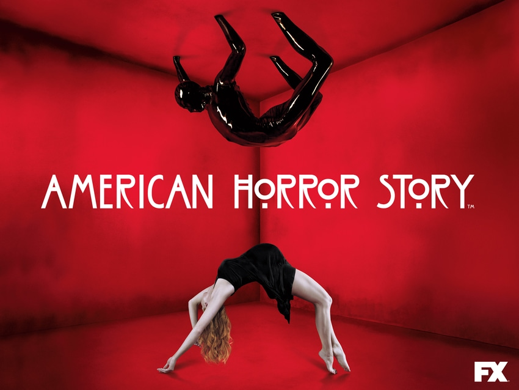

MURDER HOUSE

TRAMA
La primera temporada tiene lugar en el 2011 y sigue a la familia Harmon: Ben (Dylan McDermott) de profesión psiquiatra, su esposa Vivien (Connie Britton), y su hija adolescente Violet (Taissa Farmiga), quienes se mudan de Boston a Los Ángeles después de que Vivien tenga un aborto involuntario y Ben una aventura con una de sus alumnas. La familia se muda a una casa restaurada, y pronto se encontrarán con los antiguos residentes de la casa, los Langdon: Constance (Jessica Lange), su hija Addie (Jamie Brewer) y el desfigurado Larry Harvey (Denis O'Hare). Ben y Vivien intentan reavivar su relación, mientras Violet está sufriendo de depresión, encuentra consuelo con Tate (Evan Peters), un paciente de su padre. Los Langdon y Larry influyen con frecuencia en la vida de los Harmon, ya que la familia descubre que la casa está embrujada por todos los que murieron en ella. Entre los cuales están las fantasmas Moira, el ama de llaves (Frances Conroy) / (Alexandra Breckenridge) y la primera dueña, Nora Montgomery (Lily Rabe).
EPISODIOS
- Pilot
- Home Invasion
- Murder House
- Bromas Aterradoras
- ¡Arde, Bruja, Arde!
- La Llegada del Hachero
- Los muertos
- La Rendición Sagrada
- La Cabeza
- Los Placeres Mágicos de Stevie Nicks
- Proteger el Aquelarre
- Vete al Infierno
- Las Siete Maravillas
REPARTO
- Connie Britton como Vivien Harmon
- Dylan McDermott como el Dr. Benjamin "Ben" Harmon
- Frances Conroy como Moira O'Hara vieja
- Alexandra Breckenridge como Moira O'Hara joven
- Lily Rabe como Nora Montgomery
- Sarah Paulson como Billie Dean Howard
- Evan Peters como Tate Langdon
- Taissa Farmiga como Violet Harmon
- Denis O'Hare como Larry Harvey
- Jessica Lange como Constance Langdon
- Jamie Brewer como Adelaide "Addie"
- Kate Mara como Hayden McClaine
- Christine Estabrook como Marcy
- Zachary Quinto como Chad